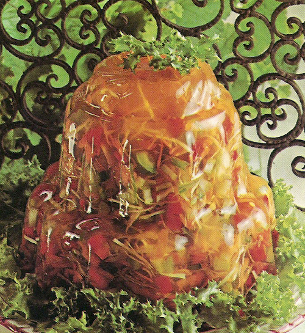

Troll Salad

Slimy Jelly Salad with original flavor (not vegan!)
Just like mom used to make.. or grandpa.. or.. I really don't know who would make salad like THIS!
Not for the faint of heart!
Ingredients
- 2 envelopes unflavored gelatine
- 1/2 cup sugar
- 1 teaspoon salt
- 1 can (12 oz) apple juice
- 1/2 cup lemon juice
- 2 tablespoons vinegar
- 1 cup shredded carrot
- 1 cup sliced celery
- 1 cup finely shredded cabbage
- 1/2 cup chopped green pepper
- 1 can (4 oz) chopped pimiento
Steps
- In small saucepan, combine gelatine, sugar, and salt; mix well.
- Add 1 cup water. Heat over low heat, stirring constantly, until sugar and gelatine are dissolved. Remove from
heat.
- Stir in apple juice, lemon juice, vinegar, and 1/4 cup cold water. Pour into medium bowl. Refrigerate 1 hour, or
until mixture is consistency of unbeaten egg white.
- Add carrot, celery, cabbage, green pepper, and pimiento; stir until well combined.
- Turn into decorative, 1 1/2-quart mold. Refrigerate 4 hours,or until firm.
- To unmold: Run small spatula around edge of mold; invert onto serving plate.
- Place hot dishcloth over mold; shake gently to release. Repeat, if necessary. Lift off mold. refrigerate until
ready to serve.
Makes 8 servings.
Back to Odin's Book of Recipes